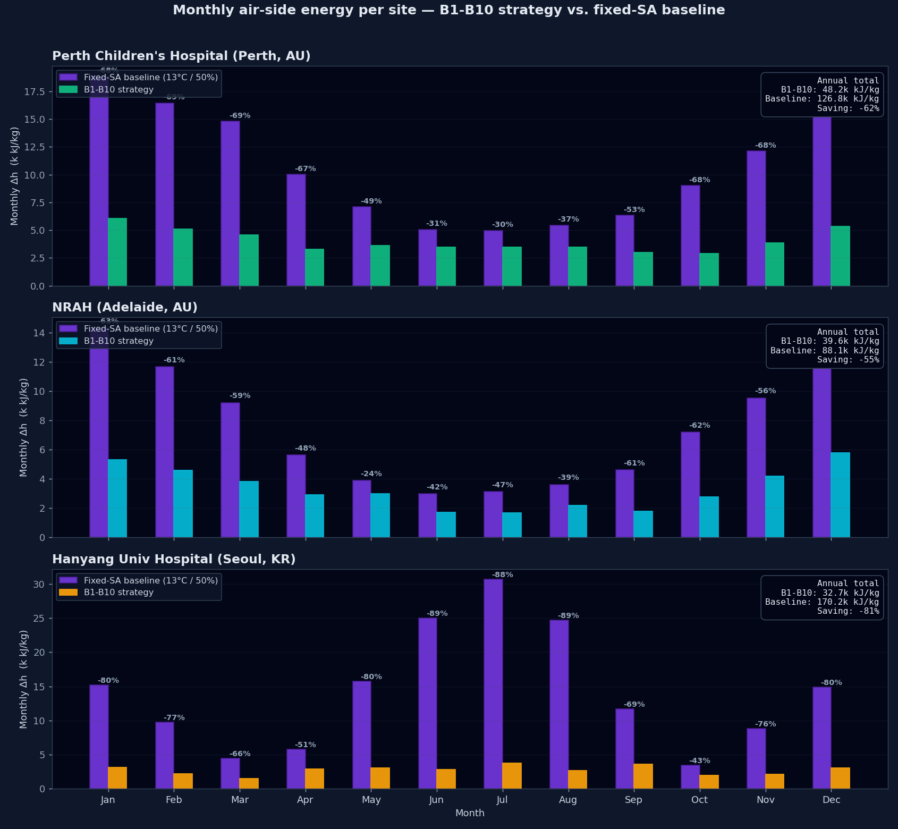

Not too hot, not too cold, not too humid.
Enough fresh outside air so the air is safe to breathe.
Do both of the above without wasting power or money.
These goals fight each other. More comfort and more fresh air usually cost more energy. Getting all three right, all day, in every season — is hard.
All four standards live on the SAME chart — temperature across the bottom, humidity up the side.
Plot one dot for the air and you can instantly see comfort, fresh-air mix, and energy — all together.
The comfort zone is drawn on the chart. Is the dot inside the good temperature/humidity band? If not, which way is it off?
The mixed-air dot sits on the line between return and outside air — its position shows the fresh-air share at a glance.
Enthalpy lines reveal free cooling: when outside air is cooler, the economizer meets the load with no mechanical cooling.
Visual proof the automatic sequences land the dot in the comfort zone, on the fresh-air line, at the lowest-energy path.
| Traditional BMS | Red5-AHU | |
|---|---|---|
| Where it runs | Cloud / head-end PC | On the controller |
| Standards built in | Add-on / manual | 55·62.1·90.1·G36 |
| Diagnose an AHU | Dig through trends | One glance |
| Vendor lock-in | Usually yes | Open protocols |
| Languages | Often one | Five |

Instead of one fixed target all year, Red5-AHU sets the supply-air target to match the season (climate bands B1–B10).
In mild months it leans on free outside-air cooling; in harsh months it does only as much conditioning as needed.
The result: month after month the air handler uses far less energy than a fixed setpoint — automatically, with no operator effort.
Comfort, fresh air, and energy on one live picture — no guesswork, no digging through data.
Automatic free-cooling and climate-adaptive supply air cut supply-air energy ~70%.
No cloud, no extra server. Fewer parts to fail; keeps working if the network drops.
BACnet-native and open (MQTT/Modbus) — no vendor lock-in; integrates with what you have.
Aligned to ASHRAE 55 / 62.1 / 90.1 and Guideline 36 out of the box.
Diagnose at a glance, clone the setup to the next unit, in five languages.